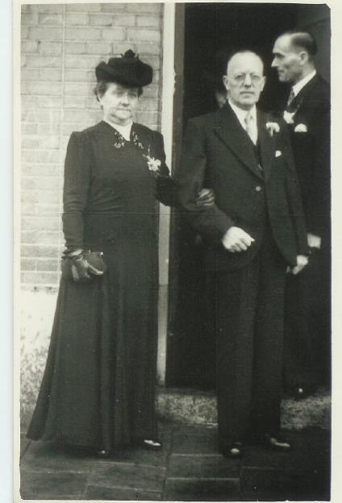
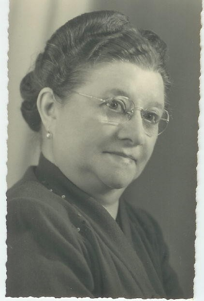
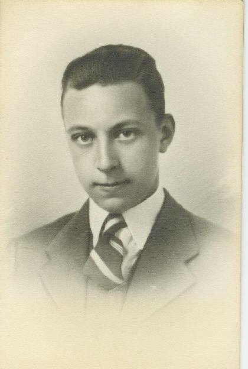
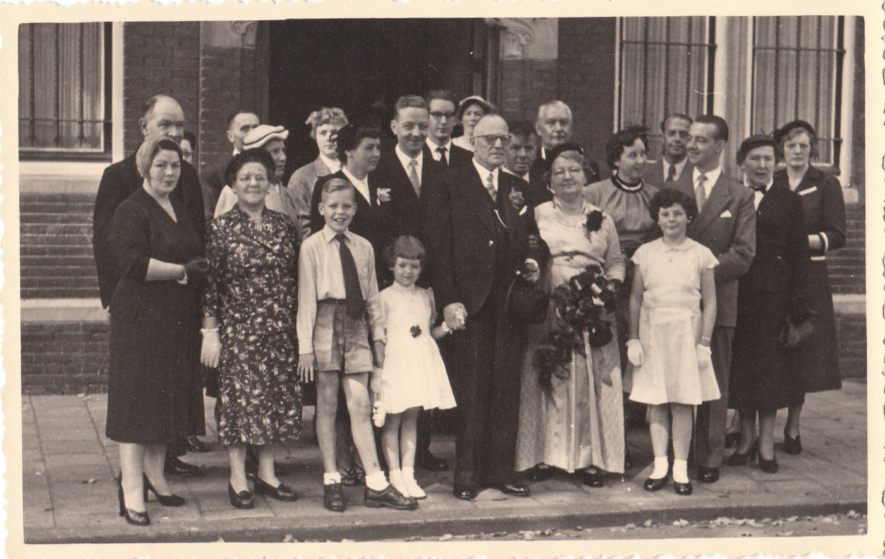
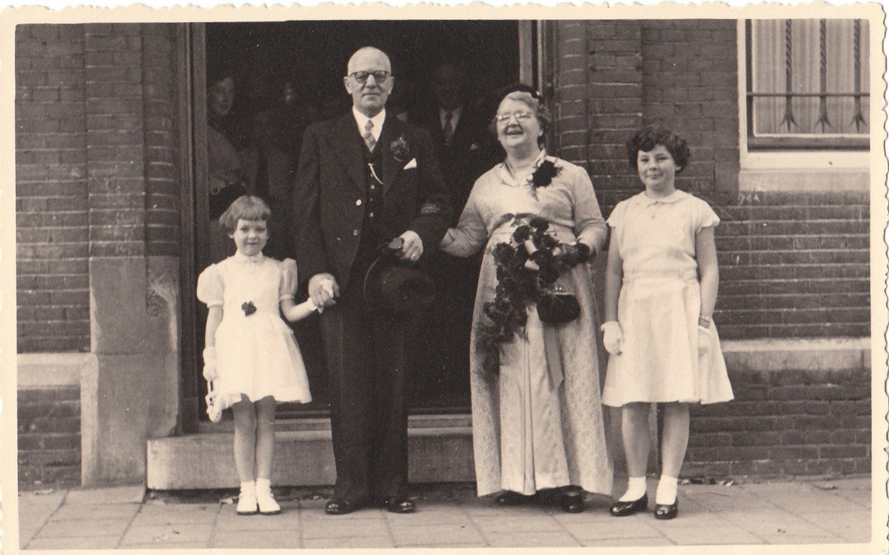
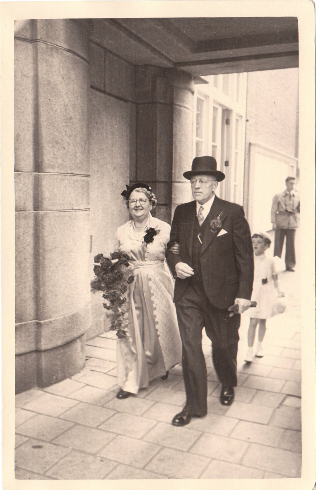

Biografieën · Amsterdam
Antonij Coops
Een Amsterdams gezinsleven, 1890–1956
Archiefakten en familiefoto’s geven een beeld van het Amsterdamse gezinsleven van Antonij Coops met Johanna Dankaart en later met Catharina de Klerk. Het bankwezen komt in twee generaties terug. Antonij werkte als bankbediende. Zijn zoon Antonij Petrus Johannes klom volgens de herinneringen van kleinzoon Ton op tot directeur beleggingen voor West-Nederland.
‹ Alle biografieën en historische artikelen01 / Burgerlijke stand
Antonij Coops en zijn gezin
Antonij Coops (1890–1956) was 26 jaar en werkte als magazijnbediende toen hij op 18 mei 1916 in Amsterdam trouwde met de 23-jarige Johanna Sophia Maria Dankaart. De akte noemt ook zijn ouders, Antonij Coops en Maria Johanna Tobias. Zij staat vermeld als schoonmaakster. [1]
Hun jongste zoon, Johannes Petrus Antonij Coops, overleed op 20 juli 1949 in Domburg. Hij was achttien jaar. De akte vermeldt dat zijn ouders in Amsterdam woonden en dat zijn vader bankbediende was. [2]
Johanna overleed op 29 april 1953 in Amsterdam. Op haar bidprentje staat haar echtgenoot vermeld als Antony Coops. [3]
Volgens de familiegenealogie trouwde Antonij in 1954 met Catharina Elisabeth de Klerk, in de familie bekend als Tante To.
02 / Familiearchief
Uit het familiealbum












Foto’s en bijbehorende fotonotities uit het Familiearchief Coops. Klik op een foto om die groter te bekijken.
03 / Familieherinneringen
Wat de familie zich herinnert
De onderstaande bijdragen geven de herinneringen van de schrijvers weer. Voor de leeftijd en de voornamen van Antonijs jongste zoon volgen we hierboven de overlijdensakte.
Ton Coops, kleinzoon van Antonij
Mijn vader ( A.P.J.) en mijn moeder (C.G.VETH) zijn beide geboren in Amsterdam, waarbij mijn vader staat ingeschreven bij de Gemeentesecretarie op Sloterdijk (thans Amsterdam) en mijn moeder in Amsterdam-Zuid. Mijn vader is direct na zijn geboorte naar Zeeland verhuisd in de plaats Schoondijke alwaar zijn vader was ingekwartierd op het Retranchement (wij praten hier over de 1e Wereldoorlog waarbij Nederland neutraal was maar België niet). Zijn ouders zijn na de 1e wereldoorlog weer teruggegaan naar Amsterdam. Mijn ouders zijn in de oorlog (1942) getrouwd, met alle ellende van dien. Toch werd ondergetekende geboren op 15-03-1944 midden in de hongerwinter. Mijn ouders hebben zich na de oorlogse jaren gestort in het verenigingsleven waaronder toneel en mijn moeder was een verdienstelijke sopraan die vele optredens heeft verzorgd. Mijn vader heeft zich in het bankwezen weten op te werken tot directeur beleggingen voor West Nederland bij de ABM-AMRO.
Van mijn opa en oma kan ik mij weinig herinneren, ik weet wel dat de jongste zoon J.P.A. reeds op 19-jarige leeftijd een hartstilstand heeft gehad tijdens het zwemmen in Domburg (Zeeland). Hij zou naar het seminarie gaan om later missionaris te worden. Helaas is dit er niet van gekomen. Mijn vaders 2e broer (P.J.A.), getrouwd met A.J.C .van STEEN, was inkoper bij de Shell en is na zijn pensionering gaan wonen in Klimmen (Limburg). Ik heb 1 neef en 1 nicht gehad te weten P.M.W.J. (Paul) en A.B.L.M. (Agnes) beide kinderen van P.J.A. en A.J.C. Zoals reeds vermeldt is Agnes op jonge leeftijd reeds overleden. Mijn opa is voor de 2e keer getrouwd geweest met C.E. de Klerk.
Met vriendelijke groet,
Ton ( A.J.) Coops
mei 2005
Martin Sneijder, echtgenoot van Agnes Coops
De Coops kant van mijn schoonfamilie heb ik eigenlijk niet gekend. Tante To (Catharina Elisabeth de Klerk) heb ik een aantal malen ontmoet. Na nooit gehuwd te zijn geweest heeft zij op oudere leeftijd (64) de liefde van haar leven (Antonij) ontmoet, maar dit huwelijk heeft door het overlijden van Antonij maar net een jaar geduurd.
Mijn schoonvader Peter (Petrus Johannes Antonij Coops) heeft het zijn leven lang zwaar gehad met het overlijden van zijn broer (Johannes Peter Antonij). Zijn andere broer (Antonij), ofwel Ome Toon, heb ik uiteraard wel gekend (niet echt goed) evenals neef Tonny en zijn vrouw Anita. Na het overlijden van mijn vrouw Agnes ging het met mijn schoonvader snel slechter. Agnes had een unieke en goeie band met haar vader en voor hem was de “lol” er ineens af. Hij kreeg ook last van staar waardoor hij zijn enige twee hobbies (lezen en autorijden) niet meer kon uitoefenen. Na Agnes’ overlijden had hij verklaard absoluut niet gereanimeerd te willen worden als dat aan de orde zou zijn. Toen hij in 2000 in het ziekenhuis belandde en een hartaanval kreeg was die wens onbekend en gevleugeld waren zijn woorden toen hij bijkwam; “verdomme ik had nog zo gezegd niet reanimeren”. Twee dagen later was hij overleden.
04 / Familiegenealogie
Gezin en nakomelingen
Antonij COOPS (XII.28)
geboren op 27-01-1890 te Amsterdam, overleden op 20-05-1956 te Amsterdam op 66-jarige leeftijd, zoon van Anthonij COOPS (zie XI.17) en Maria Johanna TOBIAS.
Gehuwd (1) op 26-jarige leeftijd op 18-05-1916 te Amsterdam met Johanna Sophia Maria DANKAART, geboren op 08-08-1892 te Amsterdam, overleden op 29-04-1953 te Amsterdam op 60-jarige leeftijd. Foto van het echtpaar.
Gehuwd (2) op 64-jarige leeftijd op 02-09-1954 te Amsterdam met Catharina Elisabeth de KLERK (binnen de familie "Tante To" genoemd), geboren op 17-05-1899 te Rotterdam, overleden op ? te Amsterdam. Trouwfoto met Agnes.
Uit het eerste huwelijk:
- Antonij Petrus Johannes (XIII.25).
- Petrus Johannes Antonij (XIII.27).
- Johannes Petrus Antonij, zie portret, geboren op 21-10-1930 te Amsterdam, overleden op 20-07-1949 te Domburg op 18-jarige leeftijd.
Antonij Petrus Johannes COOPS (XIII.25)
procuratiehouder, geboren op 06-07-1917 te Amsterdam, overleden op 14-02-1995 te Amsterdam op 77-jarige leeftijd, zoon van Antonij COOPS (zie XII.28) en Johanna Sophia Maria DANKAART.
Gehuwd op 24-jarige leeftijd op 21-05-1942 te Amsterdam met Cornelia Gijsberta VETH, 21 jaar oud, geboren op 23-06-1920 te Amsterdam.
Uit dit huwelijk:
- Antonius Johannes (XIV.20).
Antonius Johannes COOPS (XIV.20)
geboren op 15-03-1944 te Amsterdam, zoon van Antonij Petrus Johannes COOPS (XIII.25) en Cornelia Gijsberta VETH.
Gehuwd op 25-jarige leeftijd op 15-08-1969 te Amsterdam met Anita Angela KAUFFELD, 23 jaar oud, geboren op 02-04-1946 te Onstwedde.
Uit dit huwelijk:
- Claudia Tamara, manager bedrijfsrestaurant, geboren op 16-01-1973 te Purmerend.
Gehuwd op 30-jarige leeftijd op 05-09-2003 te Tilburg met Stephan Josephus Johanna van de POL, 31 jaar oud, geboren op 11-12-1971 te Goirle (bij Tilburg).
Petrus Johannes Antonij COOPS (XIII.27)
inkoper, geboren op 11-05-1923 te Amsterdam, overleden op 15-11-2000 te Klimmen (Limburg) op 77-jarige leeftijd, zoon van Antonij COOPS (zie XII.28) en Johanna Sophia Maria DANKAART.
Gehuwd op 24-jarige leeftijd op 14-05-1947 te Amsterdam met Antonia Johanna Catharina van STEEN, 22 jaar oud, geboren op 23-07-1924 te Amsterdam, overleden op 02-05-2006 te Klimmen.
Uit dit huwelijk:
- Agnes Beatrijs Louise Maria, geboren op 04-07-1949 te Amsterdam, overleden op 03-08-1996 te Castricum op 47-jarige leeftijd (begraven 8 augustus, begraafplaats “Onderlangs”).
Gehuwd op 20-jarige leeftijd op 18-07-1969 te Purmerend met Martinus Andreas SNEIJDER, geboren op 23-12-1947 te Amsterdam. - Paulus Marinus Willebrordus Johannes, impresario, geboren op 18-09-1958 te Purmerend.
Verantwoording
Bronnen
- Huwelijksakte, Noord-Hollands Archief. Amsterdam, 18 mei 1916, reg. 6C, fol. 40.
- Overlijdensakte, Zeeuws Archief. Domburg, 20 juli 1949, akte 11.
- Bidprentje van Johanna Dankaart. Amsterdam, 29 april 1953.
- Familiearchief Coops. Foto’s en fotonotities, de familiegenealogie en bijdragen van Ton Coops en Martin Sneijder.